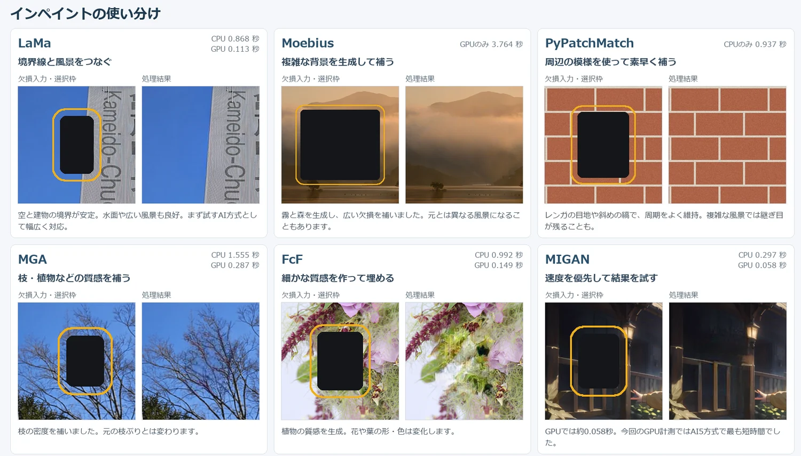
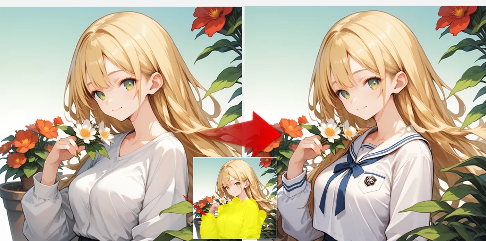
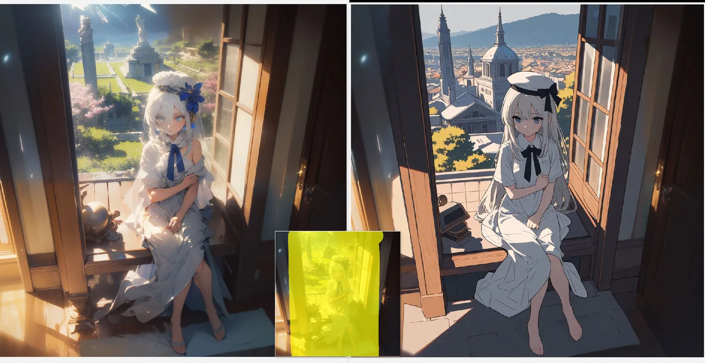
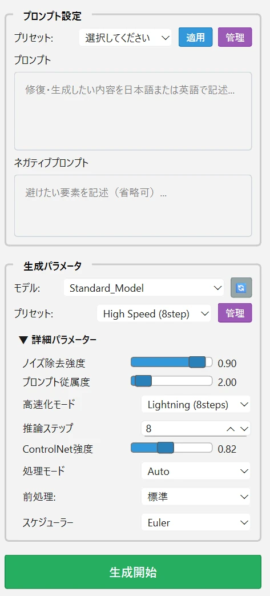
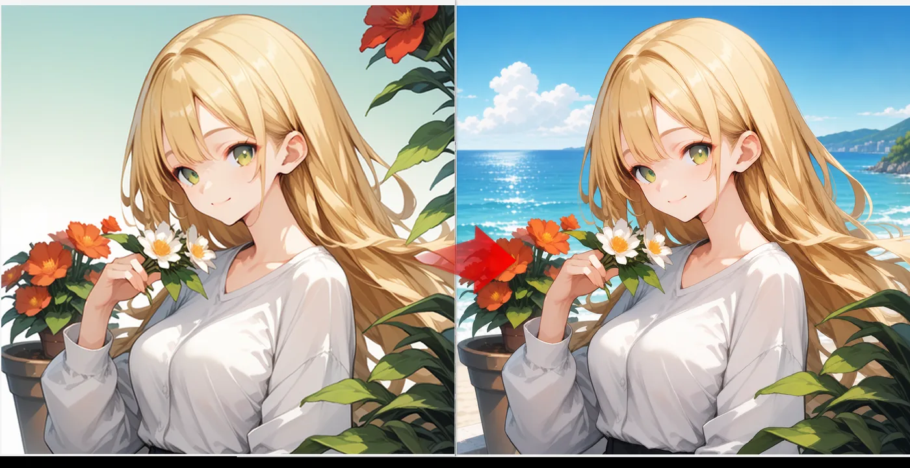
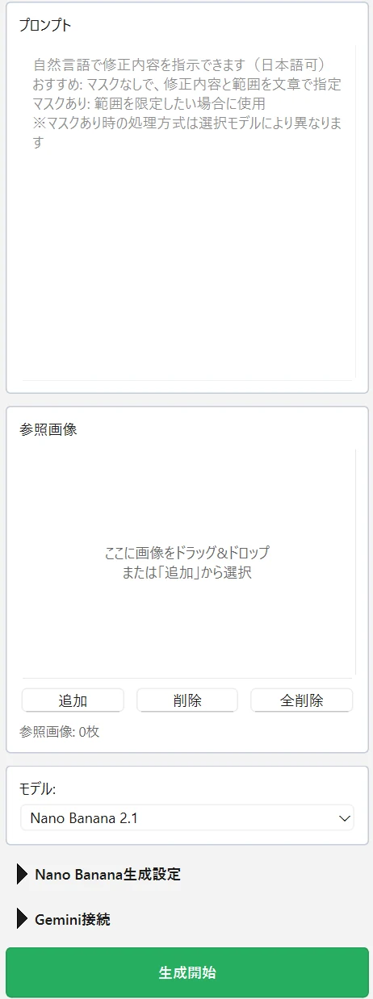
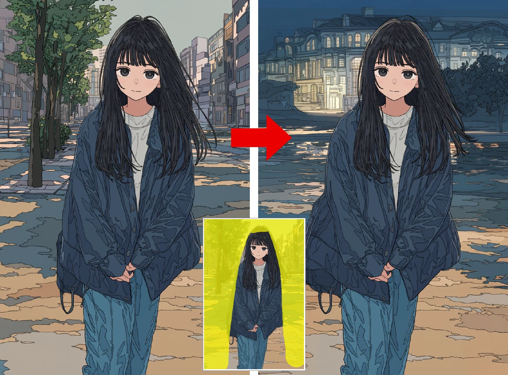
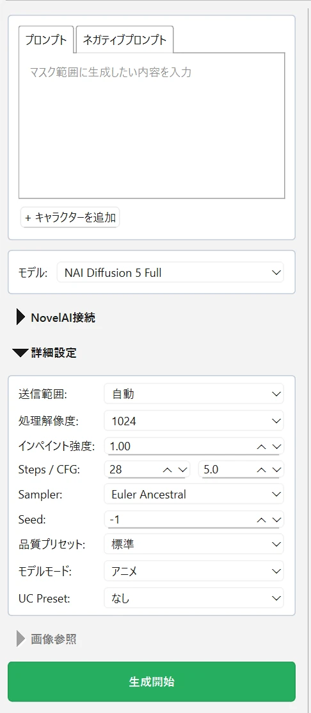
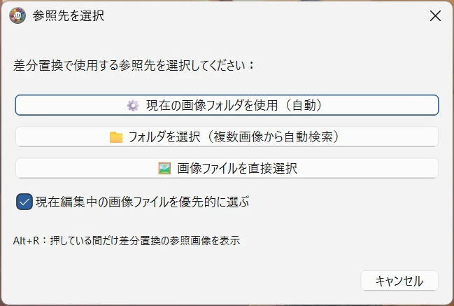

インペイント
マスクで塗った範囲に処理をかけるツールです。「消す（修復・除去）」「描き直す（インペイント）」「元に戻す（差分置換）」のどれをしたいかで、使うカテゴリが変わります。
ツールバー
| 1マスクツール | 左ドラッグで範囲を塗り、右ドラッグで消します。マスク上で Shift＋ホイールを回すと範囲を拡大／縮小できます。 |
| 2AI自動マスク | ONにすると Shift＋左クリックで対象をAIが選んでマスクにします（Shift＋右クリックで除外）。 |
| 3カテゴリ | 修復・除去／インペイント／差分置換／その他（Ctrl+↑↓）。 |
| 4モデル | カテゴリ内のモデルを選びます（Ctrl+Shift+↑↓）。よく使うモデルには設定で直接選択キーを割り当てられます。 |
| 5サイズ | マスクの太さ（右クリック＋ホイール）。 |
| 6実行 | マスク範囲に処理をかけます（Enter／ダブルクリック）。 |
| 7マスクの全消去 | 描いたマスクをすべて消します。 |
カテゴリとモデルの選び方
修復・除去プロンプト不要・数秒
不要物を周囲になじませて消します。うまくいかなければモデルを切り替えて試してください。
- 除去 (LaMa)
- 大きな範囲向け。建物・看板・空と境界線
- 除去 (MIGAN)
- 最速。複雑な背景や細かいディテール
- 除去 (MGA)
- 草木・雲・水面・布地などの質感
- 除去 (FcF)
- 壁紙・床などの模様、直線的な構造
- 修復 (PatchMatch)
- 周辺の似た模様で補う。小さな不要物・細い傷
- 修復 (OpenCV Telea)
- AIを使わない高速修復。小傷・ゴミ・細い線
- 補完 (Moebius)
- 背景を生成して補う。人物や複雑な背景向け（NVIDIA GPU必須、初回約1GB）
インペイントプロンプトで描き直す
左のサイドバーでプロンプトや参照画像を設定します。
- 詳細インペイント (SDXL)
- プロンプトどおりに描き直す。GPU必須、10〜60秒ほど
- 参照インペイント (SDXL)
- 元画像（または参照画像）の構図・絵柄を保って描き直す
- NovelAIインペイント
- マスク範囲をNovelAIで描き直す（NovelAIの契約が必要）
- GPT／Geminiインペイント
- 自然言語（日本語可）で編集。マスクなしなら画像全体を編集
差分置換元に戻す
参照元の画像から同じ位置の画素を戻します。元画像が残っている場合の修復に最適です。
- 差分置換
- AutoMosaicの不要なモザイクを外す、編集前に部分的に戻す、など
その他補助的な処理
- 背景除去 (部分)
- マスク範囲だけ背景除去（背景除去ツールの設定を使用）
- モザイク処理
- マスク範囲だけモザイク（モザイクツールの設定を使用）
- 消しゴム
- マスク範囲を透明化（透過非対応の形式では白）
修復・除去モデルの比較

詳細／参照インペイント（SDXL）の例

範囲を大まかに塗ってプロンプトを入れるだけで描き直します。

参照画像を指定しなければ、元画像そのものを参照します。
詳細／参照インペイントの設定

1234567| 1プリセット | プロンプトの組み合わせを保存・適用します。 |
| 2プロンプト | 描きたい内容。日本語・英語どちらでも入力できます。 |
| 3ネガティブプロンプト | 出したくない内容（省略可）。 |
| 4モデル | 使用するSDXLモデル。 |
| 5生成プリセット | Small／Medium／Big_Change で書き換えの強さ、High Speed（4step／8step）で速度を選びます。 |
| 6詳細パラメーター | ノイズ除去強度・プロンプト従属度など。基本はプリセットのままでOK。 |
| 7生成開始 | マスク範囲に生成を実行します。 |
設定で「画像の生成情報をインペイント用プロンプトに取り込む」をONにすると、開いた画像のプロンプトが初期値に入ります。参照インペイントでは、参照画像とマスク前処理（original／fill／latent noise）も選べます。
GPT／Geminiインペイントの例

外部サービス（GPT／Gemini）の設定

123456| 1プロンプト | 修正内容を自然言語で指示します（日本語可）。 |
| 2参照画像 | ドラッグ＆ドロップか「追加」で、現在の画像に加えて送る画像を指定します。 |
| 3モデル | Gemini：Nano Banana 2.1／2 Lite／Pro。GPT：gpt-image 系。 |
| 4生成設定 | Geminiは生成解像度と思考量、GPTは品質・サイズ・透明度の扱いを設定します。 |
| 5接続 | APIキーを入力して保存します（このWindowsユーザー用に暗号化して保存）。「APIキー取得手順」「利用額／請求確認」へのリンクもあります。 |
| 6生成開始 | 画像をサービスに送信して編集します。 |
GPT／Geminiは従量課金、NovelAIのAnlas消費は契約・生成条件によります。画像は各社のサーバーへ送信されます。
NovelAIインペイントの例

NovelAIインペイントの設定

1234567| 1プロンプト／ネガティブプロンプト | マスク範囲に描きたい内容と、出したくない内容。 |
| 2キャラクターを追加 | キャラクターごとにプロンプトを分けて指定できます。 |
| 3モデル | 使用するNovelAIのモデル。 |
| 4NovelAI接続 | NovelAIのAPIキー（永続トークン）を入力して保存します。 |
| 5詳細設定 | 送信範囲・処理解像度・インペイント強度・Steps／CFG・Sampler・Seed など。基本は初期値のままでOK。 |
| 6画像参照 | 参照画像を指定します。 |
| 7生成開始 | マスク範囲をNovelAIで描き直します。 |
NovelAIインペイントはマスク必須で、マスク範囲だけを描き直します。NovelAIの契約が必要で、Anlas消費は契約・生成条件によります。
差分置換
参照元の画像（モザイク前の画像や編集前の画像）から、同じ位置の画素を戻す処理です。マスクで塗った範囲だけが元に戻ります。
AutoMosaicの不要なモザイクを消す使い方は、モザイクのページで説明しています。
差分置換の参照先

12345| 1参照先の選択 | Ctrl+R でこの画面を開きます。 |
| 2現在の画像フォルダを使用（自動） | 今の画像を編集前の状態に戻したいとき。 |
| 3フォルダを指定 | AutoMosaicの入力フォルダなど、元画像のあるフォルダから同名・類似名の画像を自動で探します。 |
| 4画像ファイルを直接指定 | 特定の1枚を参照にしたいとき。 |
| 5現在の画像ファイルを優先 | 参照先が同じフォルダなら、保存済みの現在ファイルを優先して使います。 |
AutoMosaicのログが同じフォルダにあれば、元画像は自動で設定されます。Alt+R を押している間だけ参照画像をキャンバスに表示して、正しい画像か確認できます。
マスクの扱い
- 処理後のマスクは、設定の「インペイント後のマスク範囲」で「処理後に消去／処理後も維持／Undo時のみ復元」から選べます。
- AI自動マスクのモデル（SAM2.1）や、マスクの広げ方・穴埋めなどは設定の「処理」で調整できます。
- 設定で「インペイント設定サイドバーを開いたままにする」をONにすると、モデルを切り替えてもサイドバーが閉じません。